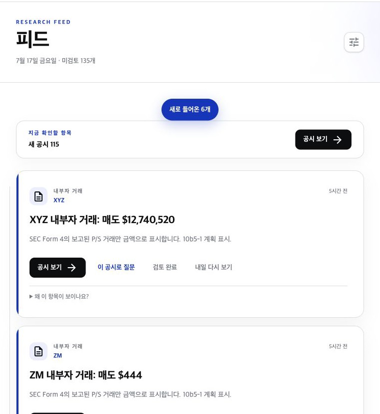
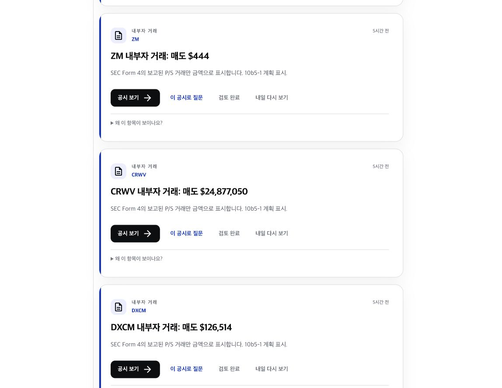

중요도 차이가 안 보임
수백 달러 거래와 수천만 달러 거래가 같은 면적을 차지합니다. 긴급도·보유 여부·최근 리서치 맥락이 충분히 드러나지 않습니다.
KRW.O · Product design audit · 2026-07-17
현재 구조는 깔끔하지만, 115건의 새 공시와 135개의 미검토 항목이 모두 비슷한 카드로 보입니다. 사용자는 무엇이 중요한지 읽기 전에 이미 피로해집니다.
추천: 상단 3개 핵심 신호는 큰 카드로, 반복 공시는 묶음·행 형태로, 내가 시작한 분석과 이어볼 리서치는 별도 흐름으로 보여주는 하이브리드 브리프.
Current evidence


수백 달러 거래와 수천만 달러 거래가 같은 면적을 차지합니다. 긴급도·보유 여부·최근 리서치 맥락이 충분히 드러나지 않습니다.
전체 미검토 수는 정확하지만, 완료 가능성보다 밀린 업무감을 만듭니다. “지금 볼 것 3개”가 먼저 보여야 합니다.
진행 중 분석의 분리, 새 항목 알림, 명확한 본문 타이포, “왜 보이나요?” 설명, 검토·미루기 상태는 좋은 기반입니다.
Four directions
| 안 | 화면 성격 | 장점 | 약점 | 적합도 |
|---|---|---|---|---|
| A. 현재형 카드 스트림 | 모든 항목을 큰 카드로 시간순/랭크순 노출 | 익숙하고 구현 변화가 작음 | 대량 Form 4에서 피로·반복·중요도 평준화 | 낮음 |
| B. 컴팩트 인박스 | 64–80px 행 목록 + 상세 패널 | 가장 빨리 훑고 처리 가능 | 업무 도구처럼 차갑고, 발견·학습 재미가 약함 | 중간 |
| C. 인스타형 스토리 피드 | 큰 카드, 풍부한 설명, 시각 콘텐츠 중심 | 몰입감과 발견성이 큼 | 공시가 많을 때 느리고, 핵심 리서치보다 체류시간을 최적화할 위험 | 부분 적용 |
| D. 하이브리드 브리프 · 추천 | 상단 핵심 3개 + 종류별 묶음 + 이어볼 리서치 | 한눈에 이해하면서도 스크롤 발견성 유지 | 묶음 규칙과 카드 밀도 3단계가 필요 | 가장 높음 |
Recommended information architecture
01
긴급 공시, 보유 기업의 중요 이벤트, 완료된 사용자 분석처럼 실제 행동 가치가 큰 항목만 사용합니다.
02
보통 등급의 8-K·6-K, 최근 리서치와 연관된 공시 등은 제목·이유·시간·한 액션만 한 줄/두 줄로 보여줍니다.
03
반복 Form 4와 낮은 우선순위 공시는 “내부자 거래 27건 · 매수 3 / 매도 24”처럼 요약하고 펼칩니다.
At-a-glance rules
Implementation reality
현재 코드에는 이미 urgent/high/normal/low, 보유·관심·최근 리서치, 최신성, discovery bucket, 사용자 상태가 있고, LLM 없이 규칙 기반 lane으로 정렬합니다. 그러나 화면에서는 대부분 동일한 카드 컴포넌트에 들어가 긴급 라벨 외의 차이가 약합니다.
Reference patterns
Inbox는 주의를 요구하는 업데이트에 집중하고 읽음·미루기·검색을 제공하며, Pulse는 For me / Popular / Recent 및 일간·주간 요약을 구분합니다. KRW.O에는 탭 자체보다 “개인 관련 / 중요 / 최신”의 계층 원리를 가져오는 것이 맞습니다.
Top Stories는 같은 사건을 묶어 소음을 줄이고, mute 기능은 회사·키워드·주제를 숨깁니다. KRW.O에서는 LLM 요약 대신 이미 저장된 filing metadata로 deterministic grouping을 적용할 수 있습니다.
보유, 섹터·테마, 피어를 별도 watchlist로 구성하면서 검색·캘린더·대화 흐름에 같은 맥락을 유지합니다. 피드에서도 “보유 / 관심 / 최근 리서치” 관계가 즉시 보여야 합니다.
업무 인박스의 처리 가능성, 금융 뉴스의 촘촘한 스캔, 소셜 피드의 자연스러운 스크롤을 섞되, 무작위 콘텐츠보다 투자 판단의 우선순위를 먼저 보여줘야 합니다.
Audit limits
이번 검토는 2026-07-17 운영 피드의 데스크톱 캡처와 현재 컴포넌트·랭킹 구조를 기준으로 했습니다. 키보드 탐색, 스크린리더, 200% 확대, 모바일 브레이크포인트는 이번 실행에서 직접 검증하지 않았습니다. 회색 11px 레이블과 텍스트형 2차 액션은 대비·클릭 가능성 위험이 있어 별도 접근성 QA가 필요합니다.